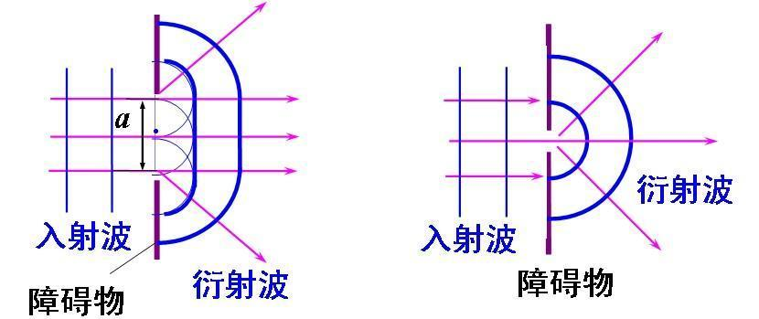

物理波的衍射和多勒普效应
波的衍射
惠更斯原理
由波源发出的波，在某一时刻所到达的各点形成的面，称为波面。
在同一波面上，各点相位相同。且各点都作为新的波源，向外发射子波。
波的传播方向与波面垂直。
波的衍射
波在传播过程中，遇到障碍物时，不再沿直线传播，而偏离直线传播方向，这种现象叫做波的衍射。

衍射可以看作是缝隙中的振源带动四周振动的表现。
波长越长，缝隙宽度越小，衍射现象越显著。
只有障碍物或孔尺寸小于波长，或与波长差不多时，衍射现象较为显著。
感性地理解，如果孔尺寸较大，对于孔外一点，到达它的波的相位差异显著，互相抵消，造成波衰减明显，因此衍射现象不显著。
衍射是波特有的现象，一切波都能发生衍射。 声波是机械波，波长在 厘米到 米之间，能绕过一般的障碍物。 光也是一种波，波长在 纳米到 纳米范围内，基本不能绕过障碍物。
多勒普效应
波源和观察者的相对运动，会影响观测到的波的频率，这种现象叫做多勒普效应。
-
波源与观察者相对静止，接收频率等于波源频率。
-
波源与观察者相互靠近，接收频率大于波源频率。
-
波源与观察者相互远离，接收频率小于波源频率。
波源静止，观察者运动
观察者相对介质运动，速度为 ，波源相对介质静止。
相对介质波速为 ，在单位时间内，观察者接收到的波数为 ，相比原先的 ，增加了 .
波源运动，观察者静止
波源相对介质运动，速度为 ，会改变发出的波的波长 .
观察者相对介质静止，在一个周期时间 内，接收到的波长为 ，因此可以计算出频率：
还有一种推导方法，是通过换参考系，使波源静止，从而转化为上面的情况。
波源和观察者同时运动
可以发现：
-
观察者运动改变观察速度
-
波源运动改变观察波长
二者并不冲突，因此，当观察者以速度 运动，波源以速度 运动时，新的频率为：